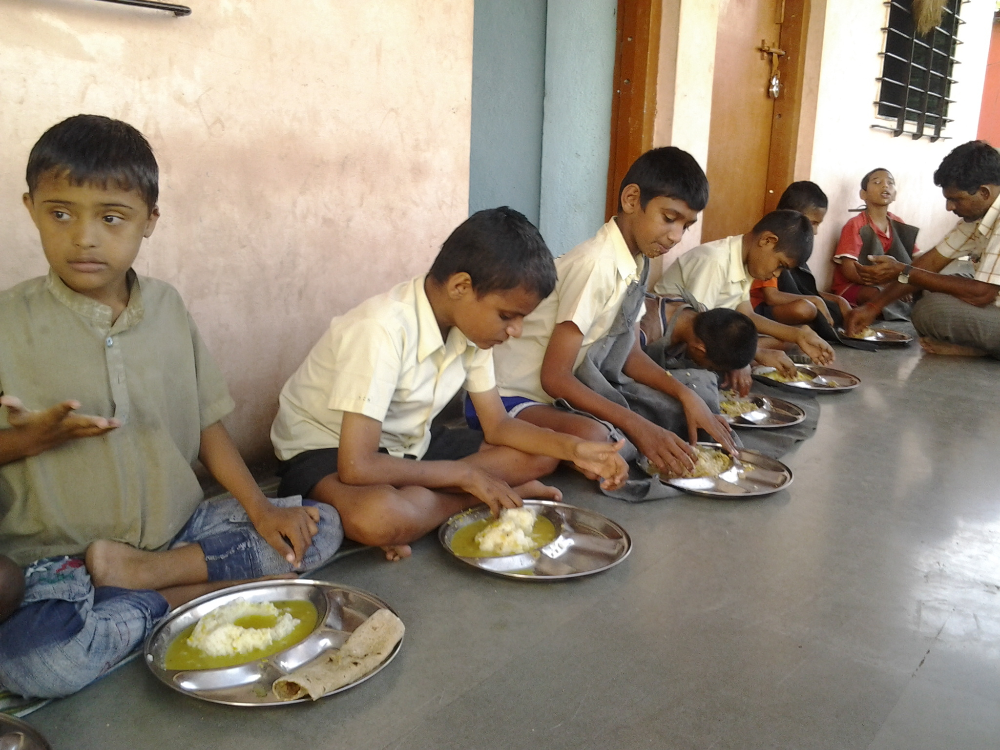

We act as bridge for donation of food
Roughly one-third of the food produced for human consumption every year - approximately 1.3 billion tonnes gets lost or wasted. Even if just one fourth of the food currently lost or wasted could be saved, it would be enough to feed 870 million hungry people in the world.” One of the scenarios is, food wastage occurring during events or at restaurants, and this mostly happens because people are unaware about NGOs which collect food and donate to needy people.
